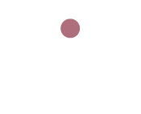

From Turmoil to Resolution
Media Coverage Over the Life of a Crisis

Crisis:
A Revolt in Turkey
Drought in Pakistan
Protests in Ukraine
Typhoon Haiyan
Overview
Timeline
Detail
Data
traditional
blog
indi
News Coverage Breakdown
Articles by Month